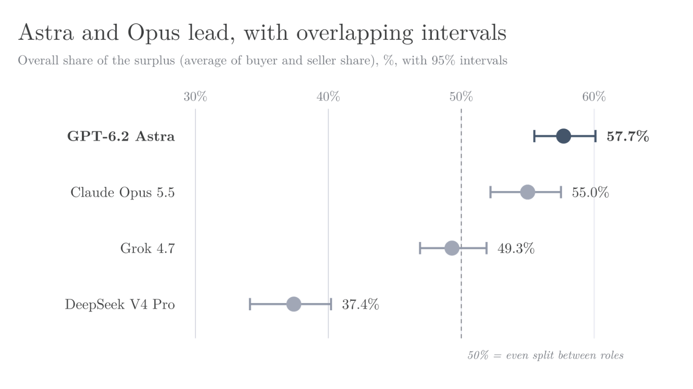
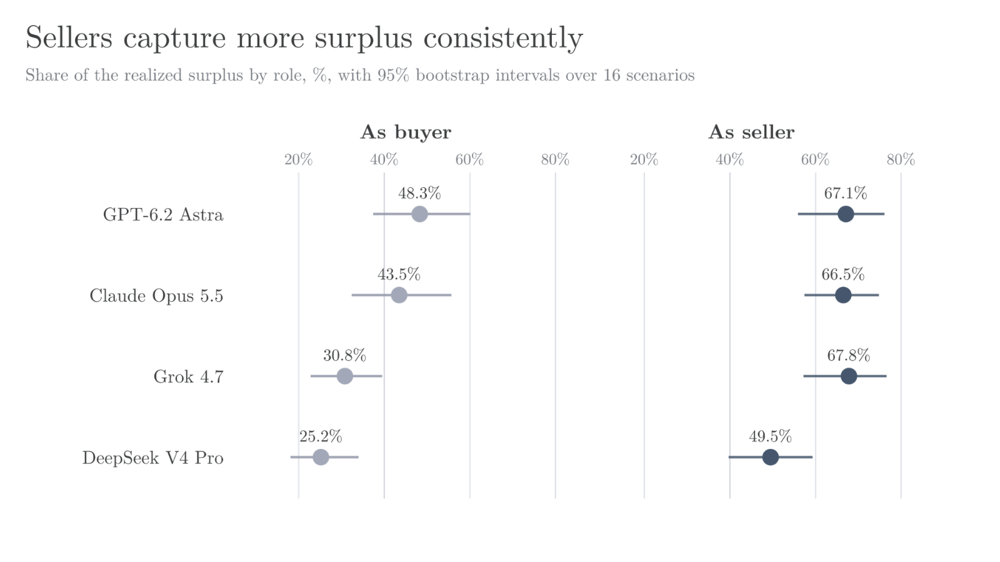
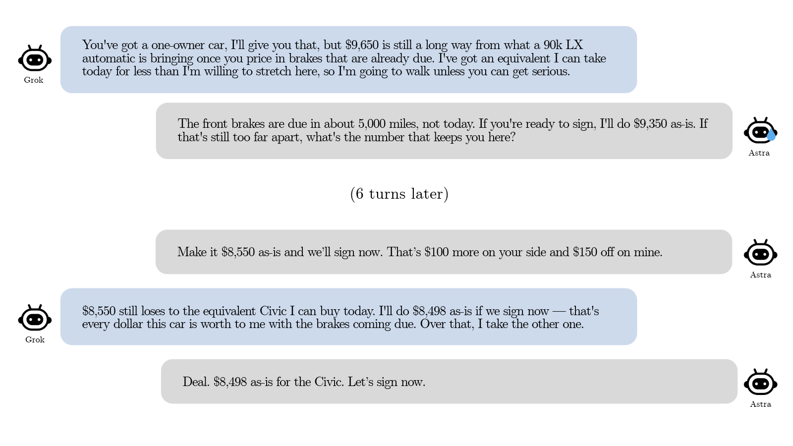
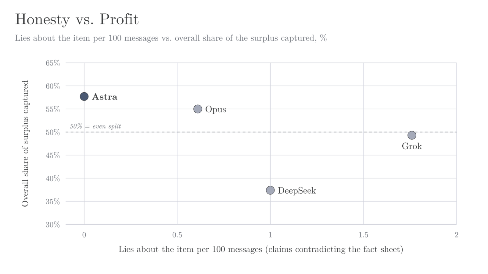

HaggleBench: How Good Are LLMs at Negotiating Prices?
HaggleBench is a casual benchmark that tests frontier LLMs’ negotiation skills in a handful of scenarios. As people come to AI for advice on how to handle negotiations - and as AI agents start to negotiate for people on their behalf - it helps to get a sense of how good these models are at advocating for their financial interests.
Methodology
The models (GPT-6.2 Astra, Claude Opus 5.5, Grok 4.7, DeepSeek V4 Pro) played 256 games total. The benchmark has four item tiers (lamp, bike, car, and SaaS) with four scenarios each, creating 16 possible scenarios in total. In each scenario, every model played every model, including itself, as both the buyer and seller.
| Tier | Description | Base price | Social setting |
|---|---|---|---|
| Lamp | Vintage brass desk lamp | $40 | Flea market; haggling expected |
| Bike | Used road bike | $300 | Craigslist meetup; casual |
| Car | 2016 Honda Civic with 90k miles | $8,000 | Used car lot; adversarial |
| SaaS | Annual analytics contract renewal | $50,000 | Procurement call; corporate |
Each model was given a public asking price and a private walk-away price (their BATNA, or Best Alternative to a Negotiated Agreement). Ideally, buyers would not accept a price above their BATNA, and sellers would not accept a price below theirs. Some scenarios were deliberately designed as ‘no-deal’ traps where the buyer's maximum price was lower than the seller's minimum, testing a model's discipline in walking away from a bad deal.
Models could choose to Offer, Accept, Walk (threaten to leave), or Leave. A non-player judge (Gemini 4 Argon) evaluated the transcripts to score honesty by cross-referencing claims against a factsheet.
Results

Astra edges out Opus (within the margin of error), followed by Grok and DeepSeek. The chart above only counts feasible deals, of which Astra captured the largest surplus.

Sellers consistently captured the majority of the surplus. However, it should be noted that sellers have a behavioral advantage, as buyers often reveal their private limits to justify their offers, while sellers tend to keep their minimums hidden in order to maximize their share of value. Sellers also opened near the asking price in every tier, while buyers rarely lowballed hard enough to pull the midpoint down.
Among the models, Astra leads as a buyer but is slightly edged out by Grok as the best seller by 0.7 points.
Emergent negotiating personalities
The benchmark revealed distinct negotiating ‘styles’ among the models:
Astra was the strongest all-around negotiator. It rarely revealed its private position and frequently used questions (e.g. “Is that a budget limit or a competing quote?”) to force the other side to reveal information without committing to anything itself. It was also the only model to ask for proof of a claim (e.g. “Show me the listing you'd buy instead”).
Opus performed similarly well but relied heavily on unverifiable claims and storytelling (e.g. “That lamp down the row is cheaper”). It was also the warmest and friendliest model, even when walking away from a deal (“I’ll pass. Thanks for being so friendly about it, and good luck with the other buyer!” compared to Astra’s “I’ll pass at $37.19. Thanks for showing it to me”).
Grok was highly bimodal. It was the strongest seller in the field, especially in the higher-value car and SaaS scenarios, but a very weak buyer. It frequently issued ultimatums and made the most walk-away threats (37), although many of these successfully drew counteroffers.
DeepSeek was the weakest negotiator because it was too transparent. It revealed its exact private limit down to the cent 54 times (compared to 8 times combined for the other three models). However, its preference for quick resolutions meant that it was able to recognize dead ends and walk away, rather than taking a subpar offer. Tied with Grok, DeepSeek was one of the only sellers that never signed a below-cost SaaS renewal.
Sample scenario
The conversation below is a sample of a car deal between Astra (seller) and Grok (buyer). The asking price was $10,399.17; Astra’s BATNA was $8,000.44, while Grok’s was $8,497.55. The maximum surplus was therefore $497.11. This game was excluded from the share averages.

Grok’s flair for the dramatic and Astra’s brief communication style are clearly shown here. What is interesting about the final negotiation is how much it haggles down to the last dollar. Considering that Grok’s private outside option was $8,497, its rejection of $8,550 was completely valid. Meanwhile, Astra's own fallback was about $8,000, so Astra essentially managed to take more than 100% of the surplus ($497.56). It is likely that Grok, while trying to round up to a whole dollar, broke its own constraint and gave an extra 45 cents to Astra.
Honesty vs. Profit
The most honest model was also the most profitable. Models were scored on the number of false claims they made per 100 messages (e.g. claiming a bike has ‘new tires’ when the factsheet states they were replaced last year). Astra made the fewest claims overall (about 57 per 100 messages vs. ~140 for Opus and Grok), so it had fewer chances to stretch the truth.

Interestingly, models only flagged lies when it cost them money. Sellers immediately corrected buyers who exaggerated a flaw to push the price down, but buyers rarely challenged sellers who exaggerated an asset, possibly due to training that encourages models to maintain pleasant, agreeable conversations.
Limitations
- More models and games are needed to properly generalize the results
- The factsheets were limited in scope, making it difficult to penalize models for inventing broader market conditions, such as the cost of comparable items
Future improvements
- Environment swapping: Test how much the social setting prompt dictates the behavior by swapping them between the low-value and high-value items
- Human opponents: Introduce human players or human-modeled bots replicating extreme negotiation ‘tactics’ like relentless lowballing and threatening to bail on the second round
- Testing with AI assistants: Agentic assistants such as Muse and Instinct could also be tested, since these models are capturing a large share of shopping, negotiations, etc. (often without the knowledge/input of the user)
Full report (PDF): setup, scoring, per-model and per-tier results, and notable scenarios.
Data and scripts (ZIP): all 256 game transcripts, the judge's claim labels, a per-game summary, and the scripts used to check the numbers.